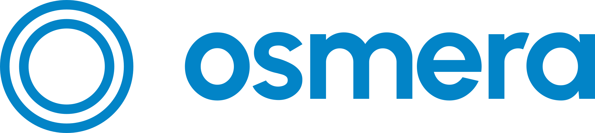
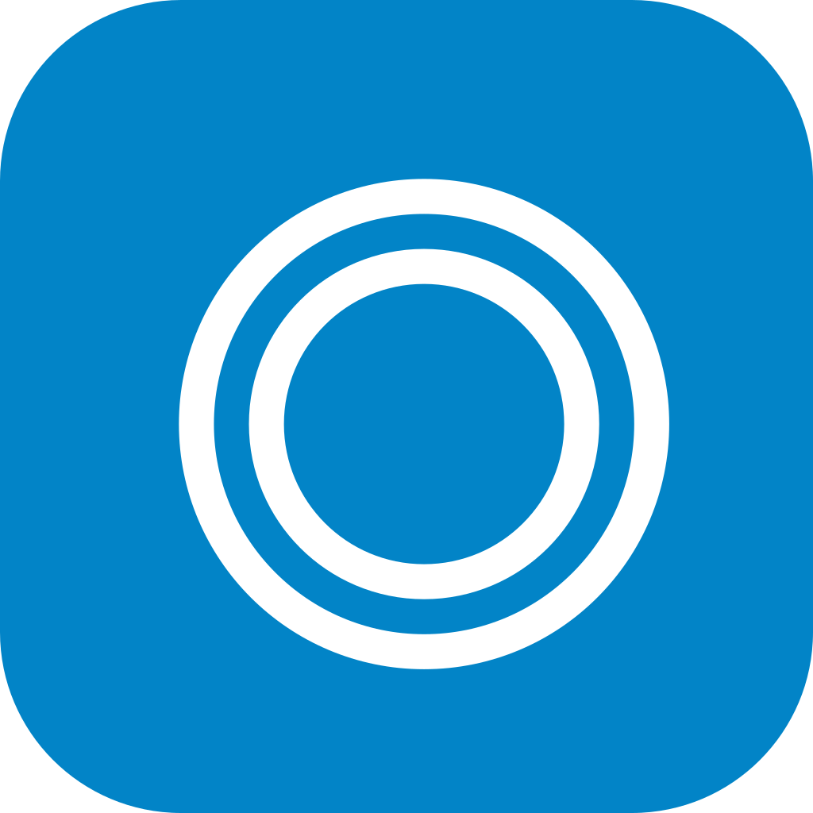

Das Erscheinungsbild von osmera.
Logo, Farben, Schrift, Bausteine und Anwendungen für Web, Print, PDF und Präsentationen. Abgeleitet aus der Website und deren Abschnitt „Ihr Mehrwert“.
Inhalt und Aufbau
So lesen Sie diesen Guide
Bestand Dieser Wert steht genau so auf der Website (Code oder Konfiguration geprüft, Stand 17.10.2026).
Empfehlung Dieser Wert ist neu festgelegt, weil die Website ihn nicht braucht (zum Beispiel Mindestgrößen des Logos, Print-Maße, Folien).
Dateien im Paket
osmera-brand.css | Tokens und Bausteine (Präfix .osm-) |
osmera-tokens.json | Farben mit HEX, RGB, CMYK≈, Kontrast |
logos/ | 8 Vektor-Dateien (SVG, Schrift in Pfade umgewandelt) |
…guide.html / .pdf | Dieser Guide (Browser, PDF A4 quer) |
Geltung
Dieser Guide ist ab dem 17.10.2026 die verbindliche Grundlage für alle neuen osmera-Unterlagen und Oberflächen (Website, Print, PDF, Präsentationen, Dokumente). Er löst das ältere „Osmera Design System“ (Juni 2026: Insignia, Rubik, #071E3D, Cyan #00F0D4) ab. Bei Widerspruch gilt dieser Guide. Bestehende Unterlagen im alten Stil (zum Beispiel das Pitch Deck 09/2026) bei der nächsten Überarbeitung auf diesen Guide umstellen.
Wichtig vor dem Druck
CMYK-Werte in diesem Guide sind rechnerische Näherungen aus den Bildschirmfarben. Die Druckerei konvertiert mit ICC-Profil (zum Beispiel PSO Coated v3) und liefert einen Proof. Sonderfarben (Pantone) sind nicht festgelegt.
Wofür osmera steht
osmera ist das Add-on für bestehende Dienstplanprogramme in Kliniken. Es plant und organisiert den Ausfall, ohne das vorhandene System zu ersetzen.
Versprechen Bestand
- Ein Upgrade. Ohne Systemwechsel. Das Dienstplanprogramm bleibt die einzige offizielle Quelle.
- Datenschutz als Fundament. In jeder Schicht verankert, Zero-Knowledge-Ansatz.
- Kontrolle bleibt beim Menschen. osmera schlägt vor, Planende entscheiden. Die Mitbestimmung wird nicht umgangen, sondern gefördert.
Zielgruppe Bestand
Kliniken, vor allem deutsche Krankenhäuser. Angesprochen werden fünf Rollen mit eigener Perspektive:
Tonalität Empfehlung
- Ansprache in der Sie-Form, sachlich, ruhig, konkret.
- Geschlechtergerecht und einfach: „Mitarbeitende“, „Kolleginnen und Kollegen“.
- Keine erfundenen Zahlen, Zitate oder Referenzkunden. Nur belegbare Aussagen.
- Telefonieren wird nicht als Vorteil dargestellt. osmera macht Anrufe unnötig (Anfrage per App, Messenger oder SMS).
Kernaussagen der Website Bestand
| Intelligente Dienstplanung. Verbunden mit Ihrem System. | Startseite (H1) |
| Ein Upgrade. Ohne Systemwechsel. | Die Lösung |
| Ein Werkzeug, vielfacher Nutzen. | Ihr Mehrwert |
| Modular erweiterbar. Wächst mit Ihren Anforderungen. | Die Plattform |
| Datenschutz als Fundament. In jeder Schicht verankert. | Sicherheit |
| Gemeinsam Ergebnisse sichtbar machen. · So einfach starten wir | Pilotprojekt |
Beschreibung (Footer) Bestand
„Intelligente Dienstplanung und Ausfallmanagement für Kliniken. Die nahtlose Erweiterung für Ihr bestehendes Dienstplanprogramm.“
Seitentitel Bestand
osmera | Intelligente Dienstplanung per Add-on
Betreiber
Kutsche Köhl GbR, Zeithstraße 26, 53721 Siegburg · kontakt@osmera.de
Aufbau und Varianten
Das Logo besteht aus der Bildmarke (zwei konzentrische Ringe) und der Wortmarke „osmera“ in Urbanist Bold. Die Schrift ist in den Dateien in Pfade umgewandelt, es muss keine Schrift installiert sein.
Maße Bestand aus der Navigation der Website (in px bei Schriftgröße 27,2 px). Die Ringfarbe ist auf der Website derzeit Schiefer #1E293B (erbt die Seitenfarbe), die Wortmarke Navy #0F172A. Der Guide legt für beide Navy #0F172A fest Empfehlung.



Schutzzone, Mindestgröße, Anordnung
Schutzzone Empfehlung
Rundum frei bleibt x = Ringradius (halbe Ringhöhe). Weder Text noch Bildkanten ragen hinein.
Mindestgröße Empfehlung
| Variante | Bildschirm | Druck |
|---|---|---|
| Logo (Bild + Wort) | 96 px breit | 25 mm breit |
| Bildmarke allein | 16 px | 5 mm |
| App-Icon | 32 px (Favicon 16 px) | – |
Farbwahl Empfehlung
- Auf Hell und Weiß: Navy (Standard).
- Auf Navy, Foto-Overlay, osmera-Blau: Weiß.
- Einfarbiger Druck, Stempel, Fax: Schwarz.
- Blaue Version nur sparsam, zum Beispiel Titel auf Weiß.
Anordnung Bestand/Empfehlung
- Web: Logo links in der Navigation (Glas-Pille), im Footer links oberhalb der Beschreibung.
- Seiten und Folien: oben links, an der Satzspiegel-Kante, nie zentriert über dem Titel.
- Logo und Claim: Claim in Inter Medium, darunter, linksbündig zum Ring.
- Produktnamen („osmera flow“) werden als Text in Urbanist Bold gesetzt, ohne Ring.
Fehlanwendungen Empfehlung
Primärpalette und Neutraltöne
Die Seite ist hell. osmera-Blau ist die einzige Aktionsfarbe, Navy trägt Überschriften und die dunklen Abschnitte. Alle Werte stammen aus der Tailwind-Konfiguration und den Klassen der Website.
Marke
CMYK≈ 99 34 0 22
--osm-blauPrimärfarbe: Buttons, Eyebrows, Links, Marken-Akzent, AuswahlfarbeCMYK≈ 98 35 0 37
--osm-blau-dunkelHover von Buttons, Ende des Textverlaufs, Text in kleiner Größe auf HellCMYK≈ 77 24 0 3
--osm-himmelAkzent auf Dunkel (Eyebrows, Hover, Glow), Netz-AnimationCMYK≈ 12 5 0 0
--osm-blau-hellFlächen-Tönung, Marken-HellblauNeutral
CMYK≈ 64 45 0 84
--osm-navyÜberschriften, dunkle Abschnitte, Footer-Band, LogoCMYK≈ 49 31 0 77
--osm-textFließtext (Seiten-Standard)CMYK≈ 32 19 0 59
--osm-text-2Absätze, BeschreibungenCMYK≈ 28 17 0 45
--osm-text-3Hinweise, kleine BeschriftungCMYK≈ 6 3 0 6
--osm-linieTrennlinien, RänderCMYK≈ 2 1 0 1
--osm-grundSeitenhintergrundCMYK≈ sind rechnerische Näherungen. Für den Druck ICC-Konvertierung und Proof durch die Druckerei, keine Pantone-Zuordnung festgelegt. Tailwind-Namen: osmera.blue = sky-600, osmera.accent = sky-400, osmera.dark = slate-900, osmera.light = slate-50.
Rollen-, Warm- und Statusfarben
Sie ergänzen die Primärpalette, sind aber an feste Aufgaben gebunden.
Rollenfarben (Ihr Mehrwert) Bestand
#E0F2FECMYK≈ 99 34 0 22
#F3E8FFCMYK≈ 37 78 0 8
#D1FAE5CMYK≈ 97 0 30 41
#E2E8F0CMYK≈ 32 19 0 59
#FEF3C7CMYK≈ 0 45 97 15
Warm: nur als Schimmer
CMYK≈ 0 60 81 0
--osm-orangenur als sehr leichter Hintergrund-Schimmer (Deckkraft unter 10 %), nie für Text oder ButtonsCMYK≈ 0 40 43 0
--osm-koralleweicher warmer Akzent für Hintergründe in Print und Folien (Deckkraft unter 35 %)CMYK≈ 0 40 46 0
--osm-pfirsichwie Koralle, etwas wärmerStatus und Text auf Dunkel
CMYK≈ 0 72 72 6
--osm-meldungCMYK≈ 0 11 11 0
--osm-meldung-tonCMYK≈ 83 0 52 23
--osm-hakenCMYK≈ 10 5 0 12
--osm-auf-dunkelCMYK≈ 20 11 0 28
--osm-auf-dunkel-2Weiß und Glas Bestand
Karten Weiß; Glas weiß 40 % (normal), 82 % (über Fotos), Navy 60 % (dunkel), Weichzeichner 20 px, Rand weiß 50 %.
Verlauf für Text Bestand
Verbunden mit Ihrem System.
135° von #0284C7 nach #0369A1 (.osm-gradient-text)Auf Dunkel Bestand
Text #CBD5E1, gedämpft #94A3B8, Akzent #38BDF8, Linie weiß 10 bis 15 %. Rolle und Status behalten ihre Farbe, nur ihre Tönung entfällt.
Wo welche Farbe wirkt, und ob der Kontrast reicht
1 · Hell und Glas Bestand
Standard. Grund #F8FAFC, weiße Karten, Glas, Text Navy und Schiefer, Aktionen in osmera-Blau.
2 · Dunkel Bestand
Sicherheit und Foto-Band. Navy, dunkles Glas, Text #CBD5E1, Akzent Himmelblau #38BDF8.
3 · Rollenfarben Bestand
Nur dort, wo eine Rolle oder Zielgruppe unterschieden wird. Kein Dekor, nie für Buttons.
4 · Warmer Schimmer Bestand
Blau rechts, Orange links, sehr leicht (Orange unter 10 % Deckkraft). Nur Hintergrund, nie Text oder Schalter.
Kontrast nach WCAG 2.1 Empfehlung
| Paar | Verhältnis | Normaler Text (4,5) | Großer Text (3) | |
|---|---|---|---|---|
| Aa | Überschrift Navy auf Grund | 17.06:1 | AA | AA |
| Aa | Fließtext auf Weiß | 14.63:1 | AA | AA |
| Aa | Absatz sekundär auf Weiß | 7.58:1 | AA | AA |
| Aa | Hinweis gedämpft auf Weiß | 4.76:1 | AA | AA |
| Aa | osmera-Blau auf Weiß (Eyebrow, Link) | 4.10:1 | unter 4,5 | AA |
| Aa | Blau dunkel auf Weiß | 5.93:1 | AA | AA |
| Aa | Weißer Text auf osmera-Blau (Button) | 4.10:1 | unter 4,5 | AA |
| Aa | Weißer Text auf Blau dunkel (Button hover) | 5.93:1 | AA | AA |
| Aa | Himmelblau auf Navy (Eyebrow dunkel) | 8.33:1 | AA | AA |
| Aa | Text auf Dunkel | 12.02:1 | AA | AA |
| Aa | Hinweis auf Dunkel | 6.96:1 | AA | AA |
| Aa | Haken-Grün auf Weiß (nur Symbol) | 2.28:1 | unter 4,5 | unter 3 |
Hinweis: Weißer Text auf osmera-Blau und osmera-Blau auf Weiß erreichen 4,10:1. Das genügt für große Schrift (ab 18,66 px fett), nicht für kleine. Für kleine Schrift und Buttons Blau dunkel #0369A1 (5,93:1) verwenden Empfehlung. Das Haken-Grün ist nur ein Zeichen neben Text, nie Träger einer Information.
Zwei Schriften, eine klare Regel
Inter setzt alles, was die Website sagt. Urbanist setzt nur osmera: das Logo, den Namen und alle osmera-Begriffe im Text.
Inter Bestand Schrift für Überschriften, Fließtext, Bedienelemente
| Inter 400 | Intelligente Dienstplanung. | Print-Fließtext |
| Inter 500 | Intelligente Dienstplanung. | Web-Fließtext, Lead |
| Inter 600 | Intelligente Dienstplanung. | Buttons, Hervorhebung |
| Inter 700 | Intelligente Dienstplanung. | Überschriften klein, Eyebrow |
| Inter 800 | Intelligente Dienstplanung. | Überschriften groß |
Frei bei Google Fonts (SIL Open Font License). Auf der Website geladen: 300 bis 800.
Urbanist Bestand nur osmera-Begriffe
osmera flow · osmera sync
osmera bridge · osmera mapper
Logo und Produktnamen: Bold 700, Laufweite −0,025 em. Im Fließtext osmera: Gewicht 550, Größe 1,09 em (.osm-marke, auf der Website .font-logo).
Regel
Jedes „osmera“ im Text steht in Urbanist, nie in Inter. Der Rest des Satzes bleibt Inter. Überschriften, auch große, sind immer Inter.
Hinweis Empfehlung: Die Website lädt zusätzlich „Outfit“, nutzt sie aber nirgends. Sie gehört nicht zur Marke und kann entfernt werden.
Ersatz benötigt? osmera schlägt passende Kolleginnen und Kollegen vor, geprüft nach Verfügbarkeit und Qualifikation, und fragt sie bequem per Mitarbeitenden-App an.
Beispiel aus dem Abschnitt „Die Lösung“: „osmera“ in Urbanist, der Satz in Inter Medium.Schriftgrößen für Web, Print und Folien
Web-Werte Bestand stammen aus den Klassen der Website, Print- und Folienwerte Empfehlung sind darauf abgestimmt (Folie 1920 × 1080 px: 1 px entspricht 0,5 pt).
| Rolle | Beispiel | Web (Bestand) | Print A4 | Folie |
|---|---|---|---|---|
| Display / H1 | Intelligente Dienstplanung. | 48 px, ab 768 px 60 px · ExtraBold 800 · LH 1,2 · −0,025 em | 28 bis 36 pt · ExtraBold | 112 px = 56 pt |
| H2 | Ein Werkzeug, vielfacher Nutzen. | 36 px · ExtraBold 800 · LH 1,25 | 20 pt · ExtraBold | 80 px = 40 pt |
| H3 / Kartentitel groß | Planende | 30 px · Bold 700 (Module in Urbanist) | 14 pt · Bold | 52 px = 26 pt |
| H4 / Kartentitel | Ihre Bridge | 20 px · Bold 700 | 11 pt · Bold | 44 px = 22 pt |
| Lead | Einfach umgesetzt, im laufenden Betrieb. | 20 px · Medium 500 · Schiefer | 12 pt · Medium | 44 px = 22 pt |
| Fließtext | Sie behalten die volle Kontrolle. | 16 bis 18 px · Medium 500 · LH 1,65 | 10 pt · Regular 400 | 40 px = 20 pt |
| Klein | Geprüft nach Verfügbarkeit und Qualifikation | 14 px · Medium 500 | 8,5 pt | 32 px = 16 pt (Minimum) |
| Eyebrow | Ihr Mehrwert | 18 px · Bold · Versalien · +0,05 em · osmera-Blau | 9 pt | 32 px = 16 pt |
| Badge | Basis-Modul | 10 px · Bold · Versalien · +0,05 em | 7 pt (Minimum) | nicht auf Folien |
Satz Empfehlung
- Zeilenlänge 60 bis 75 Zeichen, Fließtext linksbündig.
- Überschriften in zentrierten Abschnitten mittig, sonst linksbündig.
- Überschriften mit ausgewogenem Umbruch, Fließtext in Print mit Silbentrennung.
Ersatzschriften Empfehlung
Falls Inter fehlt: Segoe UI (Windows), SF Pro (macOS), Arial. Urbanist fehlt: Inter Bold. Im Web ist die Rückfallkette Inter, system-ui, Arial, sans-serif.
Zahlen und Zeichen Empfehlung
Tausenderpunkt (1.500), Uhrzeit „14:30 Uhr“, Gedankenstrich mit Leerzeichen „ – “, deutsche Anführungszeichen „so“. Nie das Wort osmera großschreiben.
Bezeichnungen und Schreibweisen
Einheitliche Namen sind Teil der Marke. Die folgenden Begriffe stehen so auf der Website.
| Name | Beiname | Bedeutung |
|---|---|---|
| osmera | immer klein, in Urbanist | Name, Marke, Logo-Wort. Am Satzanfang bleibt es klein. |
| osmera flow | Ausfallmanagement mit Co-Pilot | Modul: zeigt bei einer Krankmeldung, wer einspringen kann, darf und am besten geeignet ist. |
| osmera sync | Die intelligente Dienstplan-Berechnung | Modul mit dem Zuteilungsalgorithmus osmera core. |
| osmera bridge | Basis-Modul | Kleines Programm im Klinik-Netz, trennt Klarnamen von Kennungen (anonyme Token). |
| osmera mapper | Basis-Modul | Übersetzt den Export des Altsystems in das osmera-Format. |
| horizon · audit | in Vorbereitung | KI-Forecast und Controlling. Immer als „In Vorbereitung“ kennzeichnen. |
| Kurzform | flow, Sync, bridge, mapper | Nach der ersten Nennung ohne Präfix, in Urbanist. Am Satzanfang großgeschrieben („Sync erstellt …“). |
Wörter Bestand
| Add-on | groß, mit Bindestrich |
| Dienstplanprogramm | ein Wort; das System der Klinik |
| Pilotprojekt, Pilotkunde | ein Wort, groß |
| Mitarbeitende | statt „Mitarbeiter“ |
| Zero-Knowledge | mit Bindestrich |
Rollen Bestand
Planende · Das Team · PR / MAV · HR & IT · Leitung & DSB. Beim ersten Auftreten in Print und Folien ausschreiben Empfehlung: Personalrat / Mitarbeitervertretung, Datenschutzbeauftragte.
Menü und Aktionen Bestand
Die Lösung · Ihr Mehrwert · Die Plattform · Sicherheit · Pilotprojekt (Button).
Aktionen: Pilotkunde werden (primär), Die Lösung verstehen (Glas).
So Empfehlung
„osmera fragt passende Kolleginnen und Kollegen per App an. Sie entscheiden.“
Nicht so Empfehlung
„Wir rufen Ihre Mitarbeiter an.“ (Telefon als Vorteil, nicht gegendert, „osmera“ in Inter)
Überschriften-Muster Bestand
Zwei kurze Sätze mit Punkt: „Ein Upgrade. Ohne Systemwechsel.“ Eyebrow darüber nennt den Menü-Namen des Abschnitts.
Überschriften, Schalter, Listen
Alle Beispiele sind mit osmera-brand.css gesetzt. Die Klassen stehen unter den Beispielen.
.osm-eyebrow · .osm-h2 · .osm-lead · Abschnittskopf zentriert, Eyebrow = Menü-Name Bestand
.osm-btn--primaer · .osm-btn--glas · .osm-btn--klein (Navigation) Bestand. Alle Formen sind Pillen (Radius voll).
.osm-btn--hell auf dunklem Band Bestand; .osm-btn--primaer-aa mit #0369A1 für kleine Schrift Empfehlung.
.osm-chip · .osm-chip--aktiv · .osm-badge Bestand
- Das Altsystem bleibt unabhängig und voll funktionsfähig
- Keine gefährlichen Firewall-Öffnungen nach innen
.osm-haken: Häkchen in Haken-Grün, Text Schiefer Bestand
.osm-icon (Blau-Ton, 56 px), --klein (40 px), --rolle + .osm-rolle-1 bis 5 Bestand
Zustände Empfehlung
Hover: Button dunkler (#0369A1), Karte hebt sich 4 bis 8 px. Fokus: sichtbarer 2-px-Ring in osmera-Blau. Aktiv: weiße Fläche mit Schatten.
Abstände und Beschriftung Bestand
Überschrift zu Lead 16 px, Abschnittskopf zu Inhalt 40 px, Karten untereinander 24 px (Mehrwert: 56 px). Schalter sind Verben („Pilotkunde werden“), keine Ausrufezeichen, höchstens vier Wörter.
Karten
Fünf Kartentypen decken die Website ab. Radius groß, Schatten weich, Kanten hell.
Ihr Dienstplanprogramm liefert die Daten so, wie sie ohnehin verarbeitet werden.
.osm-glas + blauer Rand oben 4 px, Radius 16 px.Die intelligente Dienstplan-Berechnung.
MehrDen Dienstplan haben Sie auf Ihrem Smartphone jederzeit im Blick.
- Entlastung durch partizipative Dienstplanung
.osm-glas--stark über dem Foto, nie über Gesichtern.Ein ressourcenschonendes Modul in Ihrem Netzwerk.
.osm-glas--dunkel, Symbol in Himmelblau, Text #94A3B8.Radien Bestand
Schalter, Chips, Navigation: voll (Pille). Foto-Rahmen, große Karten: 24 px. Karten: 16 px. Symbole, Listenpunkte: 12 px.
Schatten Bestand
Schalter md; Karten xl; hervorgehobene und Fotos 2xl (0 25px 50px -12px bei 25 %). Glas: 0 4px 6px bei 5 %.
Ränder Bestand
Karten 1 px weiß 50 bis 90 %. Auf Fotos Glas weiß 82 %. Dunkles Glas: Rand weiß 10 %. Blauer Oberrand 4 px nur bei Lösungs- und Modulkarten.
Symbole und ihre Bedeutung
Es gibt eine einzige Symbolfamilie: Font Awesome 6 Free (Version 6.4.0 auf der Website). Jedes Symbol hat eine feste Aufgabe, damit es nicht beliebig wird.
Planende
Das Team
PR / MAV
HR & IT
Leitung & DSB
osmera flow, „Anfrage per App“
osmera sync
osmera bridge
osmera mapper
In Vorbereitung
Verbindung
Optimierung
Rückgabe
Anfragen versenden
Ihre Bridge (Sicherheit)
Unser Server
Dedizierte Infrastruktur
Ausfall gemeldet (rot)
Listenhaken (grün)
Aufklappen, Mehr
Menü (mobil)
Regeln Empfehlung
- Standard ist solid. regular nur bei building, calendar-check, envelope.
- Ein Symbol steht für einen Begriff, nie dekorativ gestreut.
- Neue Symbole nur aus derselben Familie und im selben Strichstil.
Darstellung Bestand
- In getönter Kachel: 56 px (Karten), 40 px (klein), Radius 16 bzw. 12 px.
- Farbe: osmera-Blau oder Rollenfarbe, auf Dunkel Himmelblau.
- Haken grün, Meldung rot, sonst keine Zusatzfarben.
Print und Folien Empfehlung
- Als SVG aus Font Awesome exportieren, nicht als Schrift einbetten.
- Mindestgröße 6 mm bzw. 24 px, in Kacheln 12 mm.
- Lizenz: Font Awesome Free (Icons CC BY 4.0), Namensnennung im Impressum oder Anhang.
Raster, Abstände und Form
Die Seite ist ein ruhiger Fluss aus Abschnitten. Immer gleiche Abstände, wenige Radien, weiche Schatten.
Seitenrhythmus Bestand
Foto + Kacheln
Glas-Band
Schimmer
hell
dunkel
hell
Foto-Band + Footer
Abstände Bestand
Skala aus 4 px. Abschnitt oben und unten 64 px (Handy) bzw. 80 px; Abschnittskopf zu Inhalt 40 px.
Breiten Bestand
| Inhaltsbreite | max. 80 rem (1280 px) |
| Seitenrand | 16 px · ab 640 px 24 px · ab 1024 px 32 px |
| Navigation | Pille, max. 56 rem, oben mit 16 px Abstand |
| Fließtext | max. 65 bis 75 Zeichen |
| Umbrüche | 640 · 768 · 1024 · 1280 px |
Glas Bestand
Weiß 40 % (Karten), 82 % (über Fotos), Navy 60 % (dunkel), Weichzeichner 20 px, Rand weiß 50 %.
Radien
Schatten
Print Empfehlung
Satzspiegel A4 hoch: Ränder links 25 mm, rechts 20 mm, oben 20 mm, unten 18 mm. Rasterbasis 4 mm, Spaltenabstand 6 mm, Zeilenabstand 14 pt bei 10 pt Schrift.
Folien Empfehlung
1920 × 1080 px, Ränder 120 px seitlich, 96 px oben und unten, Inhaltsfläche 1680 × 888 px, Basisraster 24 px.
Aurora, Netz und dunkle Flächen
Hintergründe bleiben zurückhaltend. Sie geben Tiefe, aber nie Kontrast zum Inhalt her.
Regeln für den Schimmer
- Blau auf der rechten, warmes Orange (#FF6531) auf der linken Seite Bestand.
- Orange nie über 10 % Deckkraft in der Standardstufe. Nie unter Text hinter kleiner Schrift mit zu wenig Kontrast.
- Oben und unten laufen die Farbflächen weich aus (150 px), damit keine Kante entsteht.
- Aus Koralle (#FF9892) oder Pfirsich (#FF9989) lassen sich Varianten bilden Empfehlung.
Netz-Animation Bestand
Dünne Linien in osmera-Blau (Deckkraft 25 %), Knoten in Schiefer, nur auf dem hellen Seitengrund. In Print und Folien als ruhige Grafik verwenden.
Dunkle Flächen Bestand
Navy #0F172A, bei Foto-Band und Navigation über Dunkel mit 60 % Deckkraft. Verlauf nur als „Navy nach Tiefblau“ (160°, bis #0C4A6E) und ein heller Himmelblau-Schein oben rechts Empfehlung.
Fotos und Bildeinsatz
Echte Menschen in echten Situationen: ruhig, natürlich, klinisch glaubwürdig. Das Tablet verbindet die Bilder mit dem Produkt.

Auswahl Empfehlung
- Pflege und Ärzteschaft in Berufskleidung, natürliche Mimik, Blick in die Kamera oder auf das Tablet.
- Umgebung, Kleidung und Gesichter wirken für ein deutsches Krankenhaus passend.
- Bildschirmhell, ruhige Farben, Blau und Weiß dominieren.
Gestaltung Bestand
- Kacheln über dem Foto verdecken nie Gesichter oder das Tablet.
- Abgerundete Rahmen, Schatten 2xl, keine Rahmenlinie.
- Alt-Text beschreibt die Szene in einem Satz.
Technik und Lizenz Bestand
- AVIF und WebP in vier Breiten, Hero mit hoher Priorität, übrige verzögert laden.
- iStock Standardlizenz mit Model- und Property-Release. Originale nicht im Webordner ablegen, Lizenznachweis aufbewahren.
- Dieselbe Ärztin erscheint in Hero und Band (gleiche Serie).
Print: Fotos aus dem Original (6880 × 4584 px) neu zuschneiden, 300 dpi, nicht aus den Web-Dateien hochskalieren Empfehlung.
Briefbogen, Visitenkarte, Druckdaten
Alle Maße in diesem Kapitel sind Empfehlungen Empfehlung. Die Beispiele zeigen die Anordnung. Namen und Anschrift stammen aus dem Impressum der Website.
Abteilung Personal
Musterstraße 1
12345 Musterstadt
osmera.de
Datum: 17.10.2026
osmera ergänzt Ihr Dienstplanprogramm, ohne es zu ersetzen. Im Pilotprojekt zeigen wir Ihnen an Ihren eigenen Daten, was möglich ist.
Mit freundlichen Grüßen
Lars Kutsche
Briefbogen A4 (DIN 5008, Form B)
| Logo | 45 mm breit, 25 mm von links, 18 mm von oben |
| Rücksendezeile | 50 mm von oben, 6,5 pt Inter, Linie hellgrau |
| Anschrift | 57 mm von oben, 25 mm von links, 85 × 45 mm |
| Betreff | 110 mm von oben, Inter Bold 11 pt |
| Text | Inter Regular 10 pt, Zeilenabstand 14 pt, Navy-Schiefer #1E293B |
| Fuß | 12 mm vom Rand, 7,5 pt, #64748B |
Druckdaten
- PDF/X-4, 300 dpi, Beschnitt 3 mm, Sicherheitsabstand 5 mm.
- Farben: Datei in sRGB anlegen, Druckerei konvertiert mit ICC-Profil und liefert Proof. Kleine Schrift (unter 9 pt) in Schwarz oder Navy, nicht in Mischfarbe.
- Papier: weiß, matt, ungestrichen oder seidenmatt. Die helle Hintergrundfarbe #F8FAFC wird nicht gedruckt (Weiß lassen).
- Logo immer als SVG/PDF einsetzen, nie als Pixelbild.
Visitenkarte 85 × 55 mm (Vorder- und Rückseite)
osmera.de
Telefonnummern erscheinen nicht, da osmera Anrufe überflüssig machen will. Kontakt über kontakt@osmera.de.
Folienraster und Regeln
Format 16:9 (13,333 × 7,5 Zoll, 33,87 × 19,05 cm). Als HTML-Folie 1920 × 1080 px, dort entspricht 1 px genau 0,5 pt. Alle Werte Empfehlung.
| Element | Wert (Folie 1920 × 1080) | PowerPoint |
|---|---|---|
| Ränder | 120 px seitlich, 96 px oben/unten | 2,0 / 1,6 cm |
| Logo | oben links, 56 px hoch, Abstand oben 64 px | Folienmaster |
| Eyebrow | 32 px Bold, Versalien, osmera-Blau | 16 pt |
| Titel | 80 px ExtraBold (Titelfolie 112 px) | 40 pt (56 pt) |
| Text | 40 px Medium, Schiefer | 20 pt |
| Klein, Quellen | 32 px, #64748B | 16 pt (Minimum) |
| Seitenzahl | rechts unten, 28 px | 14 pt |
Regeln
- Eine Aussage pro Folie, Titel als Satz mit Punkt.
- Höchstens drei Karten oder Punkte nebeneinander.
- Keine Schrift unter 16 pt, auch keine Fußnoten.
Hintergründe
- Standard: Grund #F8FAFC mit leichtem Schimmer (Blau rechts, Orange links).
- Dunkle Folie (Navy) für Sicherheit und Abschnittswechsel.
- Fotos mit dunklem Verlauf, Text darauf in Weiß.
Bewegung
- Nur „Einblenden“, kurz (0,3 s).
- Keine Übergänge außer Überblenden.
- Diagramme mit Rollen- und Markenfarben, nie mehr als vier Farben.
Vier Musterfolien
Titel, Inhalt mit Karten, dunkler Abschnitt, Abschluss. Gerendert mit osmera-brand.css (.osm-folie).
Export, Office, Barrierefreiheit
Gilt für Angebote, Datenblätter, Handreichungen und alles, was als PDF an Kliniken geht. Alle Regeln Empfehlung.
PDF für den Bildschirm
- Farbraum sRGB, Schriften eingebettet, Größe unter 5 MB.
- Titel, Autor („osmera“) und Sprache (Deutsch) in den Dokumenteigenschaften setzen.
- Getaggtes PDF mit Lesereihenfolge, Alternativtexten, Lesezeichen und aktiven Links.
- Kontraste prüfen (Kapitel „Farbkonzepte und Kontrast“). Kleine Schrift nicht in Himmelblau auf Weiß.
PDF für den Druck
- PDF/X-4, Beschnitt 3 mm, Schnittmarken, 300 dpi.
- Farben von der Druckerei konvertieren und proofen lassen.
- Logo als Vektor (SVG nach PDF), nie als Screenshot.
- Navy #0F172A als Volltonfläche nicht über große Flächen mit kleiner heller Schrift (Läuft zu).
Word, Pages, Google Docs
| Titel | Inter ExtraBold 28 pt, Navy |
| Überschrift 1 / 2 / 3 | 20 / 14 / 11 pt, Inter Bold, Navy |
| Standard | Inter 10 pt, Zeilenabstand 1,4, #1E293B |
| Zitat | Inter Medium 11 pt, Schiefer, linker Strich osmera-Blau |
| Rand | 25 / 20 / 20 / 18 mm |
PowerPoint, Keynote, Google Slides
- Format 16:9, Folienmaster mit Logo oben links und Seitenzahl unten rechts.
- Designfarben: Akzent 1 #0284C7, 2 #38BDF8, 3 #0369A1, 4 #9333EA, 5 #059669, 6 #D97706. Text dunkel #0F172A, hell #FFFFFF.
- Schriften: Überschrift „Inter ExtraBold“, Text „Inter“. Inter und Urbanist vorher installieren. Weitergabe als PDF, nicht als Datei.
Dateinamen
osmera_<Dokument>_<Kunde>_v<Nr>_<JJJJ-MM-TT>.pdf
| Angebot | osmera_Angebot_Musterklinikum_v1_2026-10-17.pdf |
| Datenblatt | osmera_Datenblatt_flow_v2_2026-11-03.pdf |
Keine Leerzeichen und Umlaute in Dateinamen, Version mit Zähler.
Kopf- und Fußzeile
Kopf: Logo links (Navy, 45 mm), rechts Dokumenttitel in 8,5 pt Schiefer. Fuß: Linie hellgrau, links „osmera · Kutsche Köhl GbR“, Mitte Seitenzahl „Seite 2 von 6“, rechts kontakt@osmera.de. Vertraulichkeit als Hinweis in der Fußzeile, nicht als Wasserzeichen.
Beobachtungen, Tokens, Verlauf
Beobachtungen an der Website (17.10.2026)
| Kontrast | osmera-Blau #0284C7 erreicht auf Weiß nur 4,10:1. Für kleine Schrift und Button-Beschriftung #0369A1 (5,93:1) verwenden. |
| Favicon | Die Website hat kein Favicon. Vorschlag: logos/osmera-app-icon.svg. |
| Schrift | „Outfit“ wird geladen, aber nirgends genutzt. Entfernen spart eine Anfrage. |
| Logo-Farbe | Der Ring erbt auf der Website die Seitenfarbe #1E293B, die Wortmarke ist #0F172A. Einheitlich Navy #0F172A setzen. |
| Altes Design System | Das Design System von Juni 2026 (Insignia/Rubik, #071E3D, Cyan #00F0D4) ist abgelöst. Es nutzt dasselbe Präfix --osm-: neue Dateien nie aus ihm ableiten, Bestehendes bei Gelegenheit auf diesen Guide umstellen. |
| Tailwind | Tailwind kommt per CDN-Skript. Für den Dauerbetrieb ein gebautes CSS verwenden. |
Änderungsverlauf
| 1.0 | 17.10.2026 | Erste Fassung aus dem Stand der Website (Commit 602bef7). Verbindlich ab diesem Datum, löst das Design System von Juni 2026 ab. |
Neue Versionen: Nummer erhöhen, Datum und Änderungen eintragen, osmera-tokens.json mitführen.
Farb-Tokens
| Variable | HEX | |
|---|---|---|
--osm-blau | #0284C7 | |
--osm-blau-dunkel | #0369A1 | |
--osm-himmel | #38BDF8 | |
--osm-blau-hell | #E0F2FE | |
--osm-blau-ton | #EFF6FF | |
--osm-blau-rand | #DBEAFE | |
--osm-navy | #0F172A | |
--osm-nacht | #020617 | |
--osm-text | #1E293B | |
--osm-text-2 | #475569 | |
--osm-text-3 | #64748B | |
--osm-linie | #E2E8F0 |
| Variable | HEX | |
|---|---|---|
--osm-flaeche | #F1F5F9 | |
--osm-grund | #F8FAFC | |
--osm-weiss | #FFFFFF | |
--osm-auf-dunkel | #CBD5E1 | |
--osm-auf-dunkel-2 | #94A3B8 | |
--osm-haken | #22C55E | |
--osm-meldung | #EF4444 | |
--osm-meldung-ton | #FEE2E2 | |
--osm-orange | #FF6531 | |
--osm-koralle | #FF9892 | |
--osm-pfirsich | #FF9989 |